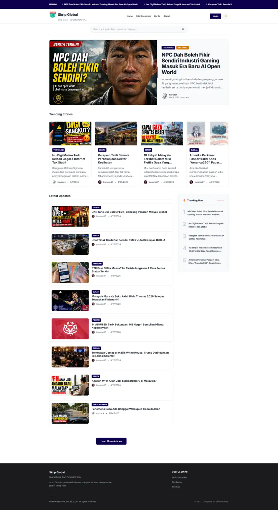
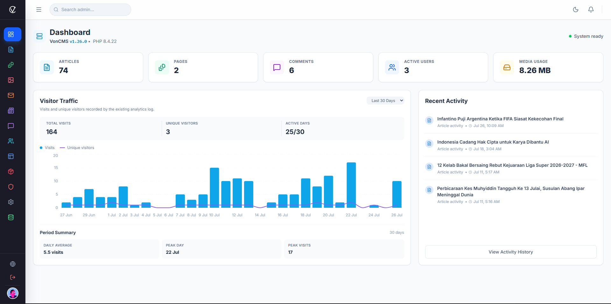
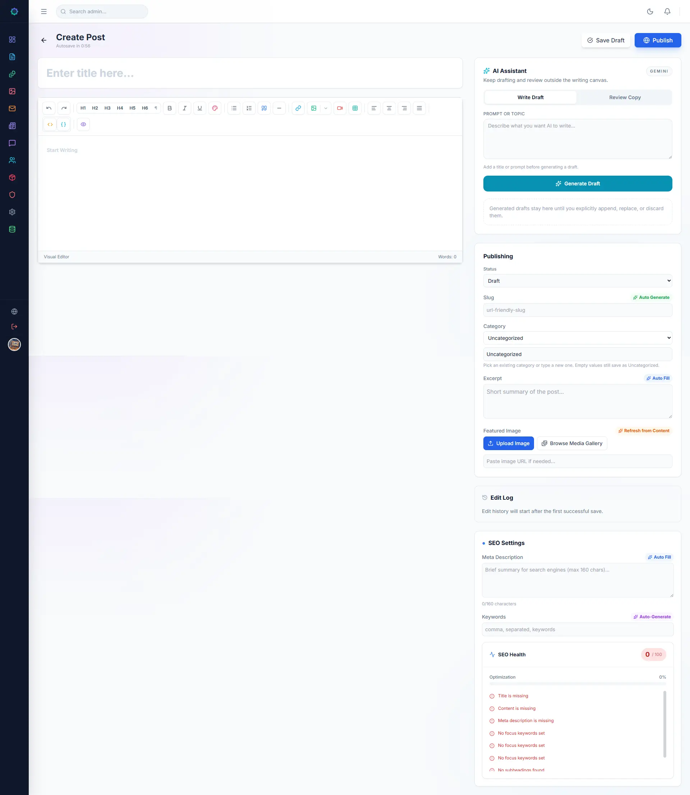
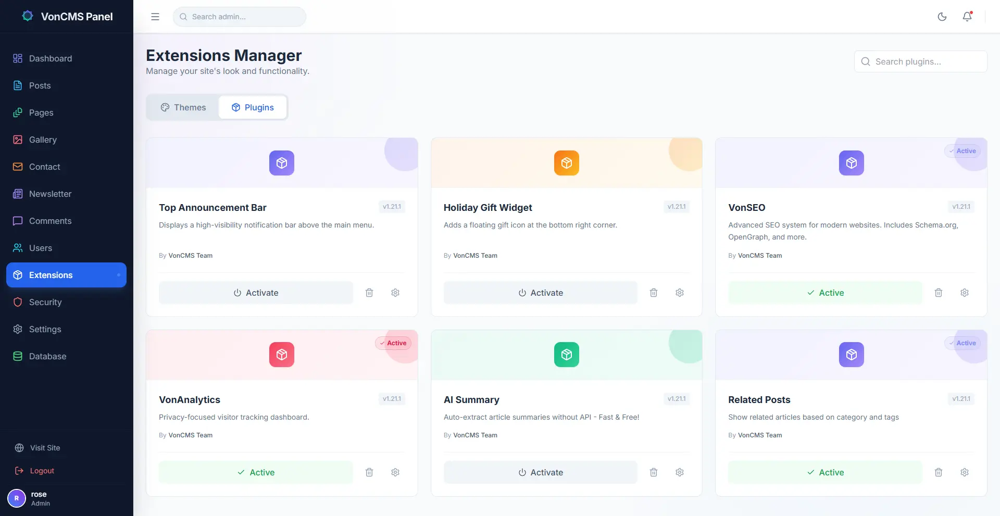
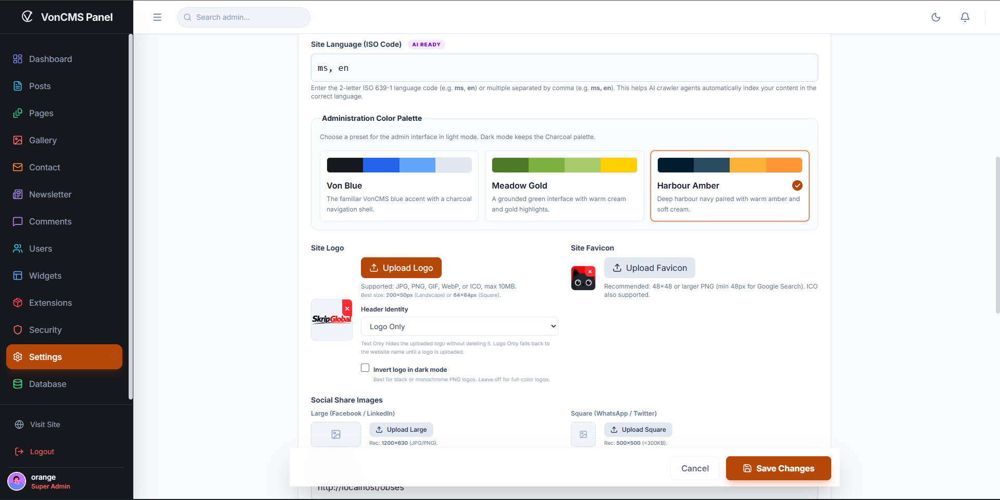
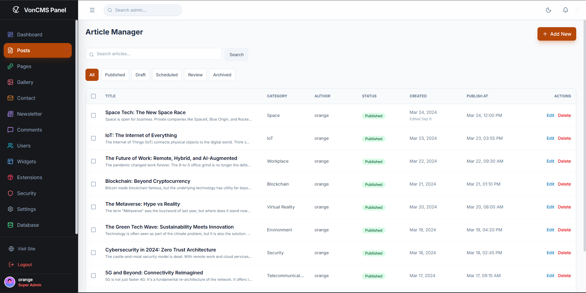
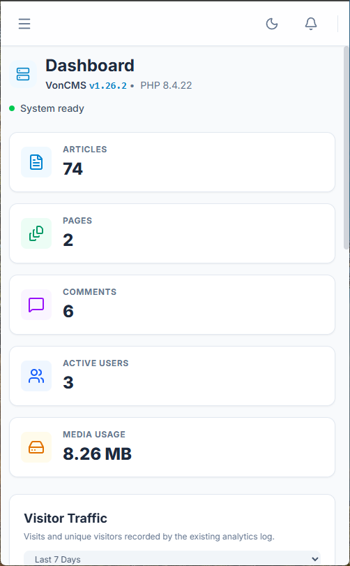
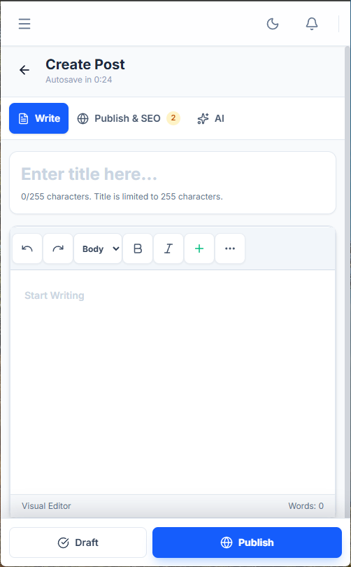
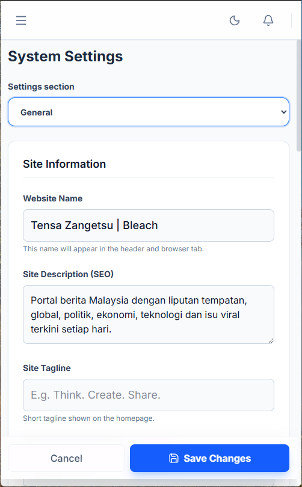
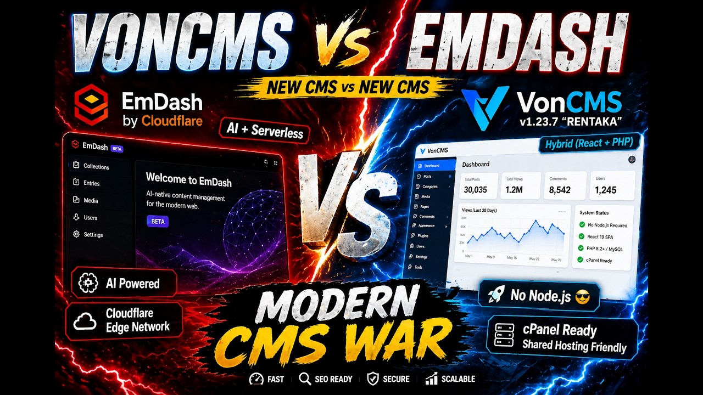

Articles and editorial tools
Posts, pages, rich-text editing, media, categories, drafts, staff review, and scheduled publishing.
VonCMS
Start your own news website or blog. Write, review, and publish with your team, on hosting you control.
A focused workspace for your articles, media, and publication. Take a look at the actual product.





A personal blog, a specialist publication, or a small newsroom. Publish on your own domain and build from there.
Writers submit drafts. Reviewers decide what is ready to publish, with separate permissions for each role.
Your hosting, database, and source. Use the included themes or work with a developer on a custom site.
A local story. A subject you know deeply. A community that deserves coverage. You do not need a large newsroom to start publishing, but you do need a place that is yours.
Separate drafting from publishing, whether you work alone or with a team.
Prepare a draft with text, images, links, and article metadata.
Writers send drafts for review without gaining publishing access.
Authorized staff can return a draft for changes, schedule it, or publish it.
The article appears in your public theme with its crawler-facing metadata.

Writers can withdraw and revise their submissions. Moderators, Admins, and Root handle the Review queue.
See how it worksUse the responsive admin from your phone to check the dashboard, manage articles, and work on a draft.




Start with the essentials in place. Add optional extensions only when they serve your site.
Posts, pages, rich-text editing, media, categories, drafts, staff review, and scheduled publishing.
Canonical URLs, structured data, sitemaps, feeds, social cards, and crawlable pagination. Search ranking still depends on your content and site.
Users and permissions, comments, contact forms, newsletter tools, ad placements, and optional analytics.
Backups, WordPress XML import, database status, repair tools, and audit logs in the admin.
Choose a public theme in the dashboard. All six are included, with layouts for news, magazines, blogs, creative work, and businesses.
A news-oriented layout with a breaking-news ticker and category sections. See the real theme in the public demo.
Explore the live siteVonCMS is one option, not the answer to every website. Compare hosting, editorial tools, and the setup you want to maintain.
| What matters | VonCMS | WordPress | Ghost | EmDash | Grav | Strapi | Payload | October CMS |
|---|---|---|---|---|---|---|---|---|
| Hosting | PHP + MySQLDeploy ZIP with built assets. No Node.js runtime. | PHP + MySQL / MariaDBSelf-hosted or managed hosting. | Node.js or Ghost(Pro)Self-host the app or use its managed service. | Workers or Node.jsA TypeScript CMS built on Astro. | PHP + filesFlat-file CMS with no database required. | Node.js + SQL databaseHeadless APIs with a frontend you build or integrate. | Node.js + Next.jsMongoDB, PostgreSQL, or SQLite adapters. | PHP + databaseComposer-based setup with a required license key. |
| Team publishing | Writer submissionsStaff review, return, schedule, and publish. | Contributor reviewContributors submit; authorized editors publish. | Staff rolesContributor, author, editor, and admin permissions. | Role permissionsAdministrator, editor, author, and contributor. | Admin users and permissionsCheck your review workflow and permission setup. | Draft & PublishReview Workflows require the Enterprise plan. | Drafts and access controlConfigure publishing rules for your collections. | Backend roles and permissionsBuild the workflow with your chosen content tools. |
| Public SEO | Native public outputMetadata, canonicals, schema, sitemaps, and feeds. | Core and pluginsCore sitemaps and feeds; plugins add richer SEO controls. | Built-in SEOMetadata, canonicals, schema, sitemaps, and social cards. | Astro-based renderingCheck current theme and metadata requirements. | Page metadata controlsCheck theme output, sitemap, and feed plugins. | Frontend implementationYour frontend controls metadata and crawlable pages. | SEO plugin + frontendStore SEO fields and render metadata in your site. | Theme templates and metadataConfigure page metadata and additional SEO output. |
| What to explore | A focused publishing baselineSix themes, an editorial workflow, and open source customization. | A broad ecosystemChoose from a mature theme and plugin ecosystem. | Publication and membership toolsEvaluate newsletters, memberships, and subscriptions. | A TypeScript stackEvaluate sandboxed plugins and deployment options. | Flat-file site managementMarkdown content, themes, and plugin options. | Structured content APIsModel content and connect it to your chosen frontend. | Code-first customizationDefine collections, permissions, and frontend behavior. | Laravel-based customizationThemes, components, and plugins for custom sites. |
Choose VonCMS for PHP hosting, an editorial workflow, bundled themes, and source you can change.
Memberships, a specific integration, or your preferred development stack may point elsewhere.
These notes compare documented capabilities, not speed or security benchmarks. Features can depend on version, plan, plugins, and configuration. Frontend responsibilities follow each product's documented architecture. Check your real workflow before moving.
Choose the ready-to-install package, named Deploy ZIP in each release. Create a database, upload the package, and finish setup in your browser.
# Runtime install
PHP 8.2+ / MySQL / Apache or LiteSpeed
# Download
Latest VonCMS Deploy ZIP
# Upload
Extract into your website directory
# Install
Open https://yourdomain.com/install
Read data/install_setup.key from hosting
Connect database and create admin
# Publish
Sign in at /admin and choose a themeThe source package is for developers and agencies working on themes, extensions, APIs, or their own release builds. Node.js is needed here, not on the production host.
Set up from sourceOne deployable application, with built frontend assets and a PHP runtime for public pages and API requests.
Explore the repositoryWatch a VonCMS walkthrough before deciding whether it fits the way you publish.

Watch on YouTubeNot for everyone. WordPress has a mature ecosystem and serves many kinds of websites. VonCMS is a smaller, publishing-focused alternative for people who want a self-hosted editorial workflow, bundled themes, and direct access to their source and data. Choose the CMS that fits your publication.
No. The Deploy ZIP includes built frontend assets and runs on PHP and MySQL hosting. Node.js and npm are only needed if you develop from source or create a custom build.
Yes. VonCMS is released under GPL-3.0-only. The software is free; your hosting, domain, and any optional paid services are separate costs. If you distribute modified copies, follow the license requirements.
VonCMS includes a WordPress XML importer. Test an import on a staging site first, and check articles, media, categories, and links before changing your live website. WordPress themes and plugins are not interchangeable with VonCMS.
Try the live demo, or download VonCMS to start your own news website or blog.
Latest stable: v1.27.6 · Free and open source · GPL-3.0-only